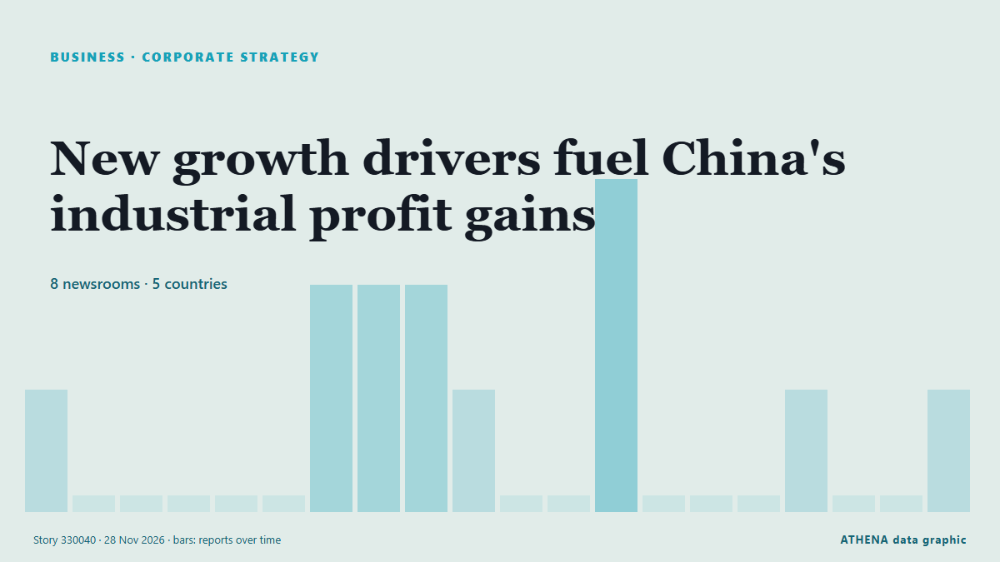

Entreprises et investissement
SponsoriséPrésenté par  Cybernetics and Artificial Intelligence Lab Welcome to the Cybernetics and Artificial Intelligence Laboratory, established at the Department of Business Administration of the National and Kapodistrian University of Athens. The lab is headed by Professor Dimitrios Thomakos. The lab aims to do research that can be published in top venues. Our research uses tools and methods of Artificial Intelligence, and lies in the following areas: - Forecasting - Decision making - Cyber security - Finance We are always looking forward to collaborating with exceptional students!
Cybernetics and Artificial Intelligence Lab Welcome to the Cybernetics and Artificial Intelligence Laboratory, established at the Department of Business Administration of the National and Kapodistrian University of Athens. The lab is headed by Professor Dimitrios Thomakos. The lab aims to do research that can be published in top venues. Our research uses tools and methods of Artificial Intelligence, and lies in the following areas: - Forecasting - Decision making - Cyber security - Finance We are always looking forward to collaborating with exceptional students!
Les titres sont affichés en anglais, tels que publiés.

Stratégie d'entrepriseNew growth drivers fuel China's industrial profit gains
China industrial profits, October Year-to-date: 16.0% y/y prior (jany - September) 15.5% October alone: 20.1% y/y prior 14.4% Profit growth at China's industrial firms accelerated sharply in October… de investingLive (ForexLive)
| 15 nov. | 36 |
|---|---|
| 16 nov. | 99 |
| 17 nov. | 88 |
| 18 nov. | 88 |
| 19 nov. | 86 |
| 20 nov. | 64 |
| 21 nov. | 40 |
| 22 nov. | 39 |
| 23 nov. | 77 |
| 24 nov. | 92 |
| 25 nov. | 85 |
| 26 nov. | 88 |
| 27 nov. | 43 |
| 28 nov. | 10 |
FSSAI found coliform bacteria in Bisleri bottled water sample, reports Reuters
Bisleri said independent testing of samples from the same batch met the standards for bacterial presence and the difference in the findings must be reviewed. de Scroll.in
Where Wednesday’s winning Lotto tickets were sold
A Lotto ticket sold in Tauranga has won $1 million in First Division. de Stuff
Nigeria ties engineering to industry
PS Tanui said traditional engineering education must evolve to equip graduates with the digital competencies required to design, develop and manage increasingly sophisticated infrastructure and… de Citizen Digital
ASB bucks the trend
ASB the only big five bank to increase profit in the September quarter. de interest.co.nz
Oando seeks N203.8bn to fund oil projects, repay debts
Oando Plc has signed agreements for its proposed N203.8 billion rights issue at N50 per share, advancing its broader recapitalisation programme aimed at strengthening its operations and financial… de ThisDay (Nigeria)
Toxic dumping ground: Greenpeace finds UK retailers' faulty returns at Agbogbloshie e-waste site
An investigation by Greenpeace Africa and Unearthed has revealed that dozens of electrical appliances returned to major UK high-street brands, including Tesco, Argos and Asda, have ended up at the… de MyJoyOnline
Lyon’s replacement revealed as bolter gets nod for Tests against New Zealand
Western Australian off-spinner Corey Rocchiccioli is in line for a Test debut as selectors announce some big calls ahead of a four-Test series against the Kiwis. de The Age
Sales for Biden memoir fall far short of books by Obama, Clinton
Promise Me, America, published last week, received lukewarm reviews. de The Straits Times
Russian commanders threatened with being sent on assault missions over lack of progress in Zaporizhzhia sector – ATESH
The Russian military command is threatening to send commanders on assault missions over the lack of progress in the Zaporizhzhia sector. de Ukrinform (English)
PETRONAS, Staatsolie take FID on Suriname's first offshore gas project
PETRONAS and Staatsolie have sanctioned KrakaWi, a $1.6-billion FLNG development of the Sloanea gas field in Block 52. de World Oil
Economic Confidence in Greece Falls to Its Lowest Level Since 2022
Greek economic sentiment fell to its lowest level since December 2022 in November, as confidence weakened across all major business sectors and among households, according to European Commission… de Greek Reporter
Fulum Announces Interim Results
Loss Continues to Narrow as Business Transformation Yields Results HONG KONG SAR – Media OutReach Newswire – 27 November 2026 – Fulum Group Holdings Limited (HKEx stock code: 1443, the “Group” or… de Laotian Times
Survival Kit Sales Surge in Greece and Across Europe
Demand for emergency supplies has soared following the European Commission's recommendation that households prepare to survive independently for at least 72 hours, with some product sales rising by… de To Vima (English)
Tanzania lures Chinese investors, development partners, private sector to invest in its energy sector
QINGDAO: THE Energy Minister Dr Juma Homera has called on investors from China, member countries of the Belt and Road Energy Partnership, development institutions and the private sector to invest in… de Daily News
MISC Profit Surges 78%, LNG Fleet Expansion Accelerates
Strong petroleum shipping markets, offshore construction activity and fleet renewal lifted MISC's third-quarter results, although the Malaysian shipping group sees contrasting prospects for tanker… de MarineLink
US maker of Marlboro cigarettes mulls over bid for Imperial Brands
Altria Group said it was also in talks with a third party over a possible offer for part of Imperial Brands. de Evening Standard (London)
6 new Negri Sembilan exco members appointed
KUALA PILAH: The Yang di-Pertuan Besar of Negeri Sembilan, Tuanku Muhriz Tuanku Munawir, has appointed six state executive council (exco) members, paving the way for the state administration to be… de New Straits Times
Nadowli-Kaleo NPP chairman invited by police over alleged seizure of 59 ‘Nkoko Nkitinkiti’ birds
The Nadowli-Kaleo Constituency Chairman of the New Patriotic Party (NPP), Joseph Kontomah, has been invited by the Upper West Regional Police Command to assist with investigations into the alleged… de MyJoyOnline
Gelato scoops up Singapore’s frozen dessert market
Home-grown artisans and international players are fuelling a boom in the local gelato scene with myriad unique flavours and interpretations. de The Business Times
Kashmir clerics split over Vande Mataram
A religious dispute over the national song Vande Mataram has intensified among clerics in Kashmir. de Times of India
Waymo Says It’s Reviewing Customer Service After Passenger Finds Loaded Gun in Robotaxi
A man posted on social media, saying that when he called the company, they implied the gun belonged to him. de KQED News (San Francisco)
Hundreds of monkeys take over Taj Mahal grounds in India
Hundreds of monkeys have taken over the grounds of the Taj Mahal in the Indian city of Agra, attacking visitors and raising safety concerns at the world-famous monument. de AzerNews
Nigeria, Togo seek investors for $50 million data park project
Nigeria and Togo are seeking private investors for a $30 million to $50 million twin data park project, with one facility in each country. de TechCabal
Fergana region builds US$20bn investment portfolio
Uzbekistan’s Fergana region has projects worth at least US$20 billion and aims to attract US$6.1 billion in foreign investment in 2027. de UzDaily
Christmas shopping season starts in Europe
The car park will also operate extended hours to facilitate people's Christmas shopping, as the busiest time of the year for shopping begins. de Irish Mirror
MSC Cruises takes delivery of LNG-powered MSC World Asia
MSC Cruises has taken delivery of MSC World Asia from Chantiers de l’Atlantique in Saint-Nazaire, France, adding the third LNG-powered vessel in its World Class series to the fleet. de Container News
Nigeria: President Tinubu Felicitates ADC Presidential Candidate Atiku Abubakar At 80
[Presidency Nigeria] I extend my warmest congratulations to former Vice President and African Democratic Congress Presidential Candidate, Alhaji Atiku Abubakar, on his 80th birthday today, November… de AllAfrica
Premier Ford, Unifor leader call on Ottawa to scrap greenhouse gas rules for Canadian automakers
Statement follows politicians’ attempts to reverse the sale of the Stellantis assembly plant in Brampton, Ont., to armoured-car maker Roshel. de The Globe and Mail
Full list of Poundland stores in London as retail chain collapses into administration
Around 11,000 jobs are at risk as the discount retailer falls into administration. de Evening Standard (London)
Irish equestrian teams likely to compete at LA Olympics despite Horse Sport Ireland liquidation
There was concern around the eventing and showjumping teams following the news that Horse Sport Ireland will enter liquidation. de TheJournal.ie
U.S.-led consortium agrees to acquire Lukoil's international portfolio in share-swap deal
An Eldridge-led consortium that includes the U.S. de World Oil